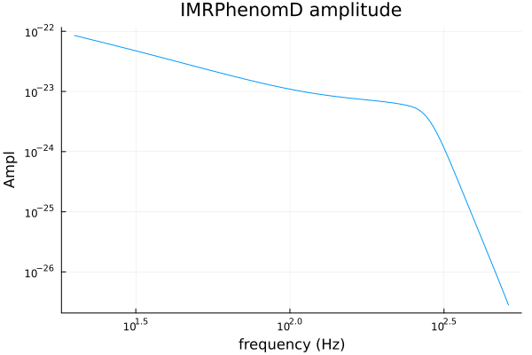
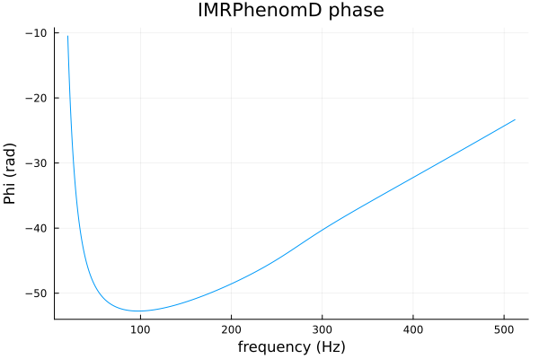
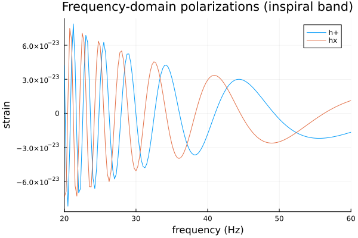

Getting Started
GravitationalWaveforms.jl generates gravitational-wave waveforms directly in Julia — no lalsimulation install. If you know ripple (the JAX equivalent — see its README quickstart) or lalsimulation itself, the shape of what follows will look familiar: pick a model, pass masses/spins/distance, get back a phase and an amplitude.
This first tutorial generates the simplest model in the package, IMRPhenomD — an aligned-spin, (2,2)-mode-only frequency-domain approximant — for a GW150914-like binary, and makes a first plot. Read Conventions before using this package for anything beyond copy-pasting these tutorials; every unit/sign convention below is used silently from here on.
Installation
GravitationalWaveforms.jl is registered in Julia's General registry:
using Pkg
Pkg.add("GravitationalWaveforms")using GravitationalWaveformsChoosing parameters
GravitationalWaveforms.jl's frequency-domain models are parametrized by chirp mass mc and symmetric mass ratio eta, not (m1, m2) directly (the standard PN parametrization) — convert once with the usual formulas:
m1, m2 = 36.0, 29.0 # solar masses, m1 >= m2 (see Conventions)
mc = (m1 * m2)^(3 / 5) / (m1 + m2)^(1 / 5)
eta = (m1 * m2) / (m1 + m2)^20.24710059171597634chi1, chi2 = 0.0, 0.0 # dimensionless aligned spins on m1, m2
dL = 0.41 # luminosity distance, **Gpc** (see Conventions) -- roughly GW150914's0.41validate_phenomd_params is a cheap, opt-in sanity check on these values (throws ArgumentError if, say, eta were out of (0, 0.25] or a spin exceeded [-1, 1]) — call it once wherever your own parameters first get assembled, not inside a hot loop:
validate_phenomd_params(eta, chi1, chi2; dL=dL)Generating the waveform
Phi and Ampl are evaluated separately, over a frequency grid f (Hz) — either a scalar or, as here, an AbstractVector:
f = collect(20.0:0.25:512.0) # LIGO's usual low-frequency cutoff up to well past merger
phi = Phi(IMRPhenomD(), f, mc, eta, chi1, chi2)
amp = Ampl(IMRPhenomD(), f, mc, eta, chi1, chi2, dL)1969-element Vector{Float64}:
8.512506930121959e-23
8.380820159388383e-23
8.252618838363634e-23
8.127770090650628e-23
8.006147642341913e-23
7.887631420457085e-23
7.77210718017726e-23
7.659466158504788e-23
7.54960475219648e-23
7.442424218016059e-23
⋮
2.971646029473645e-27
2.9528374953278867e-27
2.9341543577955317e-27
2.915595732387035e-27
2.8971607412367575e-27
2.87884851305015e-27
2.8606581830514425e-27
2.842588892931698e-27
2.8246397907974055e-27(phi[1], phi[end])(-10.47528088828631, -23.33870947832918)Plotting amplitude and phase
Loading a RecipesBase-backed plotting package (here Plots.jl with the GR backend) is all that's needed — GravitationalWaveforms.jl returns plain Vectors, so ordinary Plots.jl calls work directly, no package-specific recipe required.
using Plots
gr()Plots.GRBackend()plot(f, amp; xscale=:log10, yscale=:log10,
xlabel="frequency (Hz)", ylabel="Ampl", title="IMRPhenomD amplitude", legend=false)
The amplitude falls off through the inspiral (~f^{-7/6}, the standard stationary-phase leading-order scaling), flattens through merger, then drops sharply in ringdown — the classic frequency-domain "chirp" shape. mc/eta/chi1/chi2 here correspond to a ~65 Msun total mass system, so the merger frequency (the flattening point) sits at the low end of this band — realistic for GW150914 itself.
plot(f, phi; xlabel="frequency (Hz)", ylabel="Phi (rad)", title="IMRPhenomD phase", legend=false)
Reconstructing the polarizations
Phi/Ampl combine into the face-on, (2,2)-mode-only polarizations via h ~ Ampl*exp(i*Phi) (see Conventions):
hp = @. -amp * cos(phi)
hc = @. -amp * sin(phi)
plot(f, [hp hc]; xlims=(20, 60), label=["h+" "hx"],
xlabel="frequency (Hz)", ylabel="strain", title="Frequency-domain polarizations (inspiral band)")
The oscillation you see here is the frequency-domain phase winding rapidly as the signal chirps — this is not what a time-domain strain plot looks like (compare against the Time-Domain PN tutorial's actual h(t) plot, or GravitationalWaveData.jl's own tutorials for a real detector-noise time series).
Next: the Frequency-Domain Models tutorial compares IMRPhenomD against its successor IMRPhenomXAS, and introduces Float32 genericity.
This page was generated using Literate.jl.